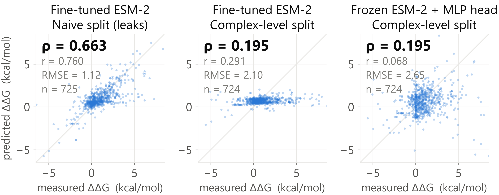
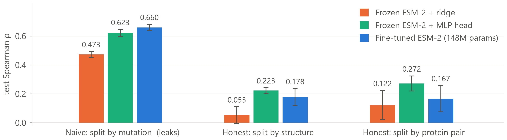

Fine-tuning ESM-2 to predict the binding cost of a single interface mutation reaches Spearman ρ = 0.66 when the test set is drawn at the mutation level, and ρ = 0.18 when no protein complex is allowed to appear in both training and test. On that honest split a 57-feature substitution-chemistry model with no language model in it is statistically indistinguishable from the fine-tuned network — and its own leaky-to-honest drop is four times smaller, because its features cannot identify which complex they are looking at. Adding one structural annotation beats every ESM-2 variant tried here by a wide margin. The gap between those numbers, and what closes it, is what this report is about.
ΔΔG of binding is the quantity an affinity-maturation campaign searches over: ΔΔG = ΔGmut − ΔGWT, with ΔG = RT·ln Kd, so positive means the mutation weakens the interface. Ranking candidate interface substitutions by predicted ΔΔG is the primitive a binder-engineering loop needs before committing to expression and SPR: it need not be calibrated in kcal/mol, it has to put the right mutations at the top of the list — which is why Spearman is the primary metric here, with RMSE reported alongside rather than instead. The sequence-only formulation is the deliberately harder and more useful one, since it applies to the many antibody–antigen pairs with no solved co-crystal, and SKEMPI 2.0 makes it measurable: experimental Kd for wild-type and mutant complexes of known structure.
Dataset. SKEMPI 2.0 ships 7,085 mutation records; restricting to single-point mutations leaves 5,112. A further 127 rows are dropped because their affinity is a bound, not a measurement — SKEMPI's convenience columns Affinity_*_parsed strip the leading < or > and return a bare number, so filtering on missing values alone silently keeps "no detectable binding" entries as if they were real Kd. The filter runs against the raw affinity columns, where the marker survives. Dropping 156 further rows with unusable Kd gives 4,829 mutations across 316 complexes. Sequences are reconstructed per complex from the residue-mapping files SKEMPI ships with each structure; the wild-type residue named by each mutation code matches the reconstruction for 5,112 / 5,112 rows (100%), asserted at parse time because an off-by-one here is what this pipeline is most exposed to. A ≤2,048-token length policy then excludes two large multi-chain assemblies, leaving 4,814 mutations across 314 complexes. Labels skew hard toward destabilization (3,612 positive vs 1,050 negative; mean +0.96, median +0.56, sd 1.71 kcal/mol) with 11.0% of rows beyond |ΔΔG| > 3 — hence Huber loss rather than MSE.
The split. This is what determines whether any number below means anything. Mutations of the same complex are highly correlated — SKEMPI contains dozens of alanine scans of the same interface. Under a random row-level partition, nearly every complex in the test set also appears in training, so the model can memorise a complex from its training mutations and then "predict" held-out mutations of that same interface. Memorising and learning ΔΔG become indistinguishable, and both register as progress. This project therefore partitions groups, never rows, and reports three definitions side by side rather than choosing one:
| Split definition | Groups | What it holds out |
|---|---|---|
| split_mutation | — | Naive row-level partition. Leaks by construction. Reported as the contrast case, never the headline. |
| split_pdb_id | 313 | Whole structures. The literal reading of "no complex in two splits". |
| split_hold_out_proteins | 152 | SKEMPI's curated protein-pair grouping. Strictest — also catches one protein pair appearing under several PDB entries. |
Assignment is size-aware rather than a uniform sample of groups: SKEMPI's group sizes span three orders of magnitude, and sampling uniformly produced a 4.7% validation set where 15% was intended — too thin to select a model on. Groups are instead shuffled under a fixed seed, taken largest-first, and each given to whichever split is furthest below its row target, landing all three definitions at 70.0 / 15.0 / 15.0 by row count with groups kept atomic. The invariant is therefore structural rather than merely tested, and it is also tested: 14 pytest cases assert that no group crosses a split boundary. The cost of size-aware assignment, stated rather than buried: filling train first sends the large, well-studied complexes there (121 training complexes vs ~96 each in val and test), so val and test hold smaller, less-studied ones — arguably the realistic generalization target, but a structured train/test difference rather than a purely random one.
A siamese ESM-2: one shared backbone encodes the wild-type and the mutant complex. Weight sharing is the point — it puts both embeddings in one space, so their difference is meaningful. Each is mask-aware mean-pooled, and the head sees concat[wt, mut, mut − wt], since ΔΔG is a question about what changed. Both partner chains are concatenated into one sequence, so the backbone sees both sides of the interface at once.
150M rather than 650M — measured, not assumed. 150M peaks at 10.9 GB; 650M needs 26.9 GB on a 24 GB card even with gradient checkpointing, because the siamese design calls the backbone twice per step, and runs 33× slower once traffic spills to host memory — silently, since CUDA on Windows falls back to shared system memory rather than raising OutOfMemoryError. Two baselines keep the fine-tuned model from failing silently: zero-shot masked-marginal fixes the floor, a frozen backbone with a trained head measures what the representation already knows. And because the three split definitions disagree about which rows are held out, a separate model is trained per definition, the harness marking the other two contaminated.

| Model | Trainable params |
split_mutation naive — leaks |
split_pdb_id honest |
split_hold_out_proteins honest, strictest |
|---|---|---|---|---|
| Zero-shot ESM-2 150M (masked-marginal) | 0 | −0.082 | +0.005 | −0.097 |
| Frozen ESM-2 + ridge | 1.9K | 0.473 ± 0.021 | 0.053 ± 0.057 | 0.122 ± 0.102 |
| Frozen ESM-2 + MLP head | 0.49M | 0.623 ± 0.024 | 0.223 ± 0.020 | 0.272 ± 0.053 |
| Fine-tuned ESM-2 150M | 148.6M | 0.660 ± 0.021 | 0.178 ± 0.059 | 0.167 ± 0.091 |
| LoRA r=8 on the same backbone | 1.11M | not run | 0.211 ± 0.080 | not run |
| — no language model below this line — | ||||
| Substitution chemistry + ridge | 57 feat. | 0.330 ± 0.029 | 0.192 ± 0.058 | 0.244 ± 0.009 |
| Substitution chemistry + GBM | 57 feat. | 0.342 ± 0.028 | 0.173 ± 0.050 | 0.272 ± 0.031 |
| …+ interface location † | 62 feat. | 0.483 ± 0.018 | 0.389 ± 0.012 | 0.478 ± 0.017 |
† Not sequence-only. interface_location is SKEMPI's structural annotation of the mutated residue (core / support / rim / interior / surface). Every other row uses sequence alone; this one is kept in the same table because it answers a question the others cannot, but it is not a like-for-like comparison and is never quoted as one.
Zero-shot is a single deterministic, ranking-only run, so it has no error bars — but its flatness is the control that matters: the three test sets are of similar intrinsic difficulty, so the gaps across the columns come from training, not from one split being easier. That floor is explained, not merely reported: scoring the mutated chain alone and inside the full complex agree at ρ = 0.888 — the masked-marginal is blind to the binding partner, scoring whether a residue belongs in its chain rather than whether it holds an interface together.

Replicates are paired on identical partitions, so this compares fine-tuning against the frozen MLP probe on the same data rather than as two independent samples:
| Split definition | Mean Δρ (fine-tune − probe) |
95% CI | p | Verdict |
|---|---|---|---|---|
| split_mutation (leaks) | +0.038 | [+0.003, +0.072] | 0.038 | Fine-tuning genuinely better |
| split_pdb_id | −0.045 | [−0.133, +0.043] | 0.229 | Not distinguishable |
| split_hold_out_proteins | −0.105 | [−0.256, +0.045] | 0.124 | Not distinguishable |
The only split on which 148M trainable parameters demonstrably beat a frozen backbone plus a 0.49M head is the one that rewards memorisation. The training curves say why, across all five replicates rather than in one illustrative run. Under the naive split, validation holds other mutations of complexes already in training, so the best epoch is the last one in all five runs (val ρ 0.17–0.35 at epoch 0 rising to 0.62–0.68 at epoch 9) — it never signals a stop. Under split_pdb_id the best epoch is erratic (3, 3, 7, 9, 9); under the strictest split three of five replicates peak at epoch 0, before the model has learned anything transferable at all. The diagnosis is ordinary overfitting, not a bug: 148M parameters against 3,374 training rows from 121 complexes, ending at train ρ = 0.87 against test ρ = 0.22.
A second finding worth as much as the first: fine-tuning is 2–4× more variable than the probe (sd 0.048–0.113 vs 0.016–0.063), and fixing the random seed does not remove it — the identical configuration produced 0.148 and 0.225 on two different days, from CUDA kernel nondeterminism alone. A single fine-tuning run of this model is not a reportable number, which is why everything above is a 5-replicate mean. LoRA was run against exactly this. Training 1.11M parameters rather than 148.6M leaves the honest-split score unchanged (0.211 ± 0.080) but cuts training-seed variance ~5×, sd 0.074 → 0.014, the frozen probe's level. It does nothing for variance across which complexes are held out (0.048 → 0.093) — the one that limits a generalisation claim.
Every method above is ESM-2, which leaves the obvious question open: what does a model with no learned representation get? The baseline uses 57 features a biochemist would write down in five minutes — BLOSUM62 score, changes in hydropathy, volume and charge, flags for proline/glycine/alanine, and one-hot residue identities. No structure, no evolution, nothing learned. On the honest splits it is not distinguishable from ESM-2, paired over the same five partitions: against the frozen probe, p = 0.148 and 0.987; against the fine-tuned network, p = 0.898 on split_pdb_id and +0.106, p = 0.049 in the chemistry model's favour on the strictest split.
It also shows why the naive split flatters ESM-2, rather than asserting it. A model built on substitution chemistry cannot tell which complex it is looking at — the features carry no complex identity — so it has nothing to memorise. How much each method loses when complexes stop being shared:
| representation | leaky | honest | drop |
|---|---|---|---|
| ESM-2 fine-tune (148.6M) | 0.660 | 0.178 | 0.482 |
| ESM-2 MLP probe (0.49M) | 0.623 | 0.223 | 0.399 |
| ESM-2 ridge | 0.473 | 0.053 | 0.419 |
| Substitution chemistry + GBM | 0.342 | 0.173 | 0.169 |
| Substitution chemistry + ridge | 0.330 | 0.192 | 0.138 |
Every representation that can encode complex identity loses 0.40–0.48. Every representation that cannot loses 0.14–0.17. The size of the leakage effect tracks the capacity to memorise — measured here rather than inferred, which is the strongest evidence in this report for the claim the whole thing is built around.
One structural annotation beats all of it. Adding interface_location takes the same model to 0.389 and 0.478 on the two honest splits, past every ESM-2 variant by +0.165 to +0.312, all p ≤ 0.002. That 5-level categorical scores ρ = 0.370 alone. The effect is what biophysics predicts, which is the main reason to believe it: mean ΔΔG runs +1.47 (interface core) → +1.21 (support) → +0.54 (rim) → +0.36 (protein interior) → +0.14 (surface). Two caveats: it is not a sequence-only result and is never compared as one — what it establishes is the size of the prize for the structural features listed under limitations, which is larger than anything the language model contributed; and location is partly confounded with complex identity, since 137 of 316 complexes carry only one distinct location value.
SKEMPI labels antibody–antigen complexes, so this breakdown is free — and it is the subset that matters most for binder engineering. It was pre-specified before any results existed, making it a planned comparison rather than a subgroup found by searching.
| AB/AG test rows only (189–230 rows) | split_pdb_id — honest | split_mutation — leaks |
|---|---|---|
| Frozen ESM-2 + MLP head | +0.264 ± 0.052 | +0.551 ± 0.042 |
| Fine-tuned ESM-2 150M | −0.065 ± 0.142 | +0.497 ± 0.083 |
| Paired difference (fine-tune − probe) | −0.330, [−0.540, −0.119], p = 0.012 | −0.054, [−0.121, +0.012], p = 0.086 |
Across all test rows, fine-tuning and the frozen probe are indistinguishable. On antibody complexes they are not: fine-tuning is reliably worse, by −0.330 (95% CI [−0.540, −0.119], p = 0.012), with the paired difference negative in all five replicates. Note what is not claimed: its own AB/AG correlation averages −0.065, but two of five replicates are positive and that mean is not distinguishable from zero (p = 0.362) — the replicates support the comparison, not the sign. Two further caveats: the strictest split holds only 6 AB/AG test rows against a 10-row minimum, so the metric is omitted there and the claim rests on split_pdb_id alone; and it is one subgroup among several — a pre-registered signal, not a confirmed mechanism.